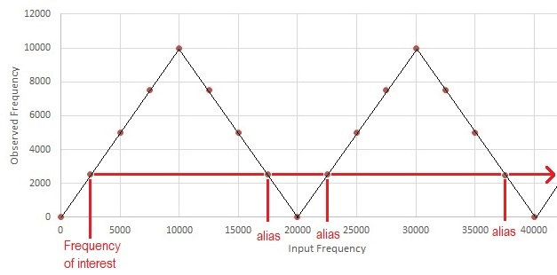

| Lecture: | 21 |
| Handout: |
alias.pdf aliasVisible.pdf |
| Excel: | alias.xlsx |
| Web resource: | Aliasing tutorial on Hack A Day |
| Objective: | To provide a working understanding of signal aliasing in a sampled system and the relationship between the sampling rate and frequency aliasing. |
Analog to Digital Conversion
Aliasing
Whenever you sample an analog signal at discrete times, you are going to run into aliasing problems and frequency folding. Let's examine these concepts and develop some robust definitions. We will use the term "ADC sample" to mean the act of an ADC generating a converted value from its analog input. In most applications, your ADC will sample its input (and generate a converted value) at a regular period that we will call the sampling rate. The following discussion concerns the sampling rate, but not with the ADC resolution and the reference voltages.Imagine that you have an ADC that samples its input once every 50 us. Every sample in the following figures is represented with a red dot. Now let's apply a 2,500 Hz, 2 V peak-to-peak sine wave to the input of the ADC. This waveform is shown in blue in the top graph. Note the horizontal axis has units of microseconds.

The top graph shows which points along the sine wave are sampled generating converted values on the ADC output. Notice that the red dots are found at 50 us interval along the time axis, consistent with the fact that we are sampling the input once every 50 us. Furthermore, the period of the waveform is 400 us, which is a frequency of 1/400us = 2,500 Hz, consistent with the claimed frequency of the input. Now, if you wrote an embedded program to store these converted values in an array. If you plotted these array values in excel you would get the lower graph. Now imagine if you were presented with only the data in the lower graph and were asked to provide a best guess at the frequency of the sine wave that produced these points. I hope that the answer is obvious, it looks like a 2,500 Hz waveform was responsible for generating the red points. We will call this the observed frequency of the sampled data. Now for the twist, there are an infinite number of different sine wave that could have generated the red points. That is, there are an infinite number of sine waves that when sampled every 50 us, have an observed frequency of 2,500 Hz. These sine waves are the alias of the 2,500 Hz waveform. Let's look at one such alias to better understand what is going on.
Again imagine that you have an ADC that samples its input once every 50 us. Every sample in the following figures is represented with a red dot. Now let's apply a 22,500 Hz, 2 V peak-to-peak sine wave to the input of the ADC. This waveform is shown in blue in the top graph. Note the horizontal axis has units of microseconds.

The top graph shows which points along the sine wave are sampled generating converted values on the ADC output. Notice that the red dots are found at 50 us interval along the time axis, consistent with the fact that we are sampling the input once every 50 us. Furthermore, the period of the blue waveform is 44 us, which is a frequency of 1/44us = 22,500 Hz, consistent with the claimed frequency of the input. It should be obvious that the red samples are not coming fast enough to keep-up with the blue waveform. This creates problems when we try to provide a best guess at the frequency of the sine wave that produced these red points. With the exception of a phase shift, the red points in the lower graph are indistinguishable from the samples collected from the 2,500 Hz waveform.
Using the handout provided at the top of the page, complete the following table. You can view the page source for this file to see the completed table.
| Input Frequency | Observed Frequency |
| 0 | 0 |
| 2500 | 2,500 |
| 5000 | |
| 7500 | |
| 10,000 | |
| 12,500 | |
| 15,000 | |
| 17,500 | |
| 20,000 | |
| 22,500 | 2,500 |
| 25,000 | |
| 27,500 | |
| 30,000 | |
| 32,500 | |
| 35,000 | |
| 37,500 | |
| 40,000 |

Imagine that you were interested in 2,500 Hz signals collected by this ADC. We have already seen that a 22,500 Hz sine wave has an observed frequency of 2,500 Hz and hence is an alias of 2,500 Hz. Any other input frequency which has an observed frequency of 2,500 Hz is also an alias. In other words, all alias of 2,500 Hz lie along the horizontal line with an observed frequency of 2,500 Hz. These higher frequency alias are said to foldback to the lowest frequency.
This creates a troubling problem for ADCs. For any frequency of interest (like 2,500 Hz), there are an infinite number of (higher) input frequencies that, when sampled, are indistinguishable from this frequency of interest.
When describing alias, I will use the term harmonic to talk about the individual v-shape regions on the Observed Frequency vs. Input Frequency graph. The left-most v-shaped region is the first harmonic, and each subsequent v-shaped region a incrementally higher harmonic. With respect to the figure above, the first harmonic has a frequency of 0Hz to 20kHz and the second harmonic has a frequency of 20kHz to 40kHz.
- Question:An ADC is sampling a signal at 20kHz. List the
first 8 alias of 2kHz?
Answer:1st harmonic: 2kHz 20kHz-2kHz = 18kHz 2nd harmonic: 20kHz+2kHz=22kHz 40kHz-2kHz = 38kHz 3rd harmonic: 40kHz+2kHz=42kHz 60kHz-2kHz = 58kHz 4th harmonic: 60kHz+2kHz=62kHz 80kHz-2kHz = 78kHz
- Question:An ADC is sampling a signal at 30kHz, what
frequencies will alias to 5kHz in the 100th harmonic?
Answer:100th harmonic: 99*30kHz+5kHz=2,965kHz 100*30kHz-5kHz = 3,005kHz
- Question:An ADC is sampling a signal at 50kHz, what
frequency, closest to 2,430kHz, alias to 15kHZ?
Answer:Let's find the start of the harmonic that is closest to 2,430kHz. 2,430kHz / 50kHz = 48.6 50kHz * 49 = 2,450kHz is the closest start of a harmonic to 2,430kHz Subtracting 15kHZ from this frequency gives us an alias of 2,450kHz - 15kHz = 2,435kHz which is just 5kHz away from the target frequency of 2,430kHz.

Attenuation
In order to address this problem we will utilize a principle called attenuation. Attenuation is the process of changing the amplitude of a waveform without changing its frequency. Specifically, we will examine how to use a low-pass filter (LPF) to reduce the power from the higher order harmonics so that when its foldback into the first harmonic, it will not have enough power to create a noticeable amount of noise.Before we start on the design of LPF, you need to master the concept of Decibels (dB) which will describe the amount of signal attenuation provided by an electronic component. Attenuation referrers to changing the amplitude of a waveform from input (Called Vin) to output (called Vout) as it travels through the electronics component.
dB = 20 * log (V_out/V_in)Note that the equation for Decibels uses a base 10 logarithm.
Answer:
dB = 20 * log (0.1/1.0) = -20 dB
Answer:
dB = 20 * log (10/1.0) = 20 dB
Answer:
-40 dB = 20 log (Vout/3 V) Vout =
Attenuation = 20 log (0.1 V /3 V) =
-68 dB = 20 log (0.5 V /Vin) Vin =
Test your understanding
You can find the solutions embedded in the "source code" for this web page by right mouse clicking on this web page and selecting "view source". The solutions are in HTML comments.- An ADC is sampling a signal at 50kHz. List the first 7 alias of 3.5kHz?
- An ADC is sampling a signal at 50kHz, what frequencies will alias to 8kHz in the 42th harmonic?
- An ADC is sampling a signal at 100kHz, what
frequency, closest to 1,380kHz, alias to 15kHZ?
- If you input a 1v sin wave into a circuit
that attenuated it by -68dB, what would the amplitude of the
output waveform be?
- If you reduced a signal by a factor of 1/256,
how many dB would you need to attenuate it by?
- Use the definition of attenuation to complete the following table.
Vout/Vin dB 1 1/10 1/100 1/1000 1/256 -3dB -96.3dB - You're sampling an analog signal at 48kHz. List all the frequencies in the first 3 harmonics that alias to 2kHz signals.
- A first-order LPF has a cutoff frequency of 2kHz. Describe the attenuation of a 80kHz input signal in decibels and as a ratio of output voltage to input voltage.